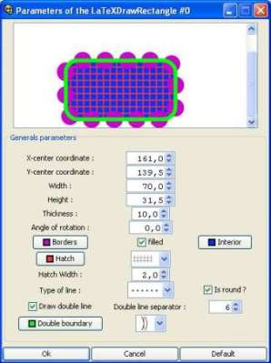
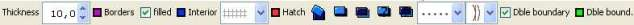
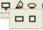
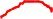
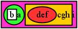
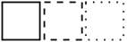

| home |
| Download |
| Features |
| Help Us |
| Manual |
| System requirements |
| License |
| Features |
| LaTeXDraw 2.0 |
| Shapes |
| Graphicals Features |
| Exportation |
| Drawing properties |
| Insert/import |
| Template |
| Check Version |
| How to start |
ShapesThe Shapes
The Parameters of the ShapesYou can modify a shape by using the parameters frame that you can display by double clicking on the shape or by clicking on this button :  . .
Then, the following frame must be displayed :  You can also modify a figure with the toolbar of LaTeXDraw :  You can especially modify :
Rectangle & Square To create a rectangle or a square use these button : . Press the left button and drag the mouse to enlarge the rectangle.
LineTo create a line, press the left button and drag the mouse to enlarge the line.
Ellipse & Circle To create an ellipse/circle, press the left button and drag the mouse to enlarge the shape.
Bézier CurveTo create a Bézier Curve, press the left button and drag the mouse to enlarge the shape. You can move the points of references by selecting the figure and move the delimitors. Like most of the shapes, you can change the thickness and the colors. Polygon To create an polygon, click with the rigth button and drag the mouse then click to create an other point, etc.
Triangle & Rhombus To create a triangle/Rhombus, press the left button and drag the mouse to enlarge the shape.
Grid To create a grid, do a right click in the draw panel; a frame of the parameters of the grid must appeared. A grid has a lots of parameters that you can change in this frame. A grid can not be resized with its delimitors, but you can change the parameters "unit" to enlarge each box of the grid. Arc To create an arc, press the left button and drag the mouse to enlarge the shape. There is three kind of arcs :
Point To create a point, do a right click in the draw panel. It exists a lots of kind of point (crossed dot, square, bar, ...) that you can change in the list "dot style". Akin Points

To create akin points, press the left button and drag the mouse to create points. Like most of the shapes, you can change the thickness, the colors, as well as the kind of the borders. Text To create a text, do a right click in the draw panel; a frame of the parameters of the text must appeared. You can enter the text in the field. The text can be bold, in italic and can use severals fonts and size.
A text can be boxed by one or several boxes; a box can be a rectangle, an oval, an circle, an diamond or a triangle.  The frameSep parameter define the separation between the figure and the box. A box can be edited like every shape with the button "edit". The boxSep parameter is used for several boxes; it define if the size of the current box must be considered during the definition of the position and the size of the boxes. For several boxes:

The position of the borders
You can change the position of the borders of some figures :
 The colors
You can change the color of the borders, the interior of the figure, the hatching or of the double seperation with
the parametres frame or with the toolbar :
Filled/hatched
Some shapes can be filled or hatched, like rectangle, rhombus, ... To fill a shape, selected the checkbox "filled", the button to change the color of the interior of the shape must appeared.
To hatch a figure, select a kind of hatching in the list in the toolbar or in the parameters frame. LaTeXDraw do not manage to angle of the hatching so, by default, the angle is 0. The Arrows
Lines ans arcs can have arrows ; there are a lots of kind of arrows listed is the field like shown in the following pictures :
 The thickness
You can change the thickness of a figure with the field "thickness :" of the toolbar or of the parameters frame. However, points do not have thickness but size which can be changed in the same field.
The kind of the borders
There is 3 kind of borders :
Like show in the following picture :  The double borders
Some figures can have double borders like rectangle, circle, ... For that, select the checkbox "dle bound.". The double borders are, in general, movable (inner, outer, middle).
 ShadowNow, a shape can have a shadow; a shape is defined by:

Colours shiftingTwo colours can be used to fill a shape; the shifting is defined by:

|

| Copyright(c) 2005-2011 - arno_b - last changes: July 13 2006 |
| LaTeXDraw, a PSTricks generator or PSTricks editor for LaTeX |